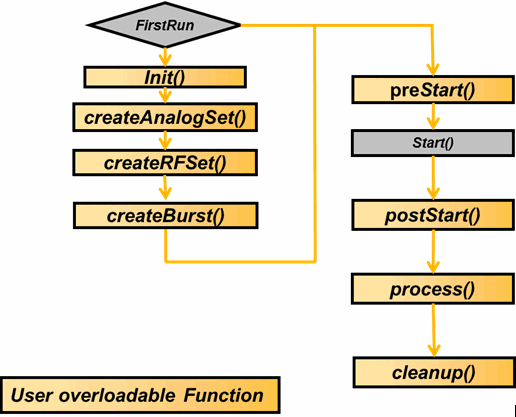
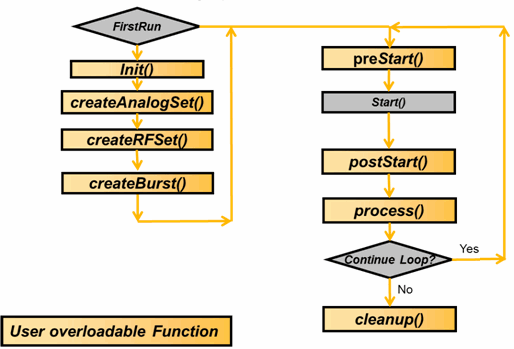

CCF test method template
To use the concurrent test framework, you can implement the test method with the CCF
test method template CCTestMethod. The template includes the functions,
addParameters(), init(),
buildAnalogSetName(), createBurst(), preStart(), postStart(),
process(),cleanup() and postParameterChange().
An extended template CCTestMethodEx including the same functions above is provided to handle the execution of fail branch in a CCF block.
The
run() function is not visible anymore. It is implemented in the framework. You
do not need to touch it. The calling of the execution statements like START_TEST and DIGITAL_CAPTURE_TEST is done in the framework based on the execution
mode specified in the init() method.
The following diagram shows the execution sequence of these functions in the serial mode (CCF_Concurrent =0). You can find the execution sequence of these functions in the concurrent mode in the overview of Concurrent test framework.

Note that the functions createAnalogSet() and
createRFSet() are not currently supported in SmarTest 7.10. The function
init(), createAnalogSet(), createRFSet() and
createBurst() are only invoked for the first run of the testflow when running
a lot.
You can customize the functions provided in the template according to your actual requirement.
The multi-site handling is done by CCF. CCF invokes the function init(),
createBurst(),preStart(), postStart() and
cleanup() for all enabled sites. You do not need to use "first invocation block" in these functions. If you want to do some site-specific
setups, add the "each site loop block". The process() function is
invoked outside the "first invocation block". If needed, you can enclose your code in the "first invocation block" in the process() function.
When using the CCF_ISR mode, a looping mechanism is provided. You can use the CCT_ContinueCurrentTest() API to control the looping of the tests. The following diagram shows the execution sequence of the test suites using the CCF_ISR mode (CCF_ContextType = "Independent").

void addParameters()
Defines the test method parameters in this function. Do not use any other APIs here.
void init()
In this function, the configuration for CCF is done, including
- configure the execution mode
- configure the smartCalc support
- register the digitizer capture pins
- configure the result area for digital capture hidden upload
- other configuration that can only be executed in the first run of a lot run
string createBurst()
In this function, you can create a multiport burst, for example, using D2S to create a multiport burst as primary label. The returned string will replace the primary label name in the test suite.
The function is invoked after
createRFSetup() and createAnalogSetup(), but only for the
first run.
void preStart()
This function includes the actions that happen before the execution of the test. The typical tasks include setting relays, setting registers, enabling hardware trigger, connecting instruments and setting RF variables.
void postStart()
This function is executed after the start of test sequencer. Tests that do not interfere with other sequencers can be put here. The typical content can be the setup and execution of a DC test.
void process()
This function is executed after the execution of test. It includes the tasks for result uploading, calculation, data logging and binning.
void cleanup()
This function is executed after the result processing is done. It usually includes disabling hardware triggers, disconnecting instruments and setting relays to a known state.
void postParameterChange(const std::string& parameterIdentifier)
This function will be invoked once the value of the specified parameter is changed.
Functional changes
- Introduced in SmarTest 6.5.4
- SmarTest 7.2.1: New function createBurst() and buildAnalogSetName()
- SmarTest 7.3.1: Added extended concurrent test method template CCTestMethodEx.